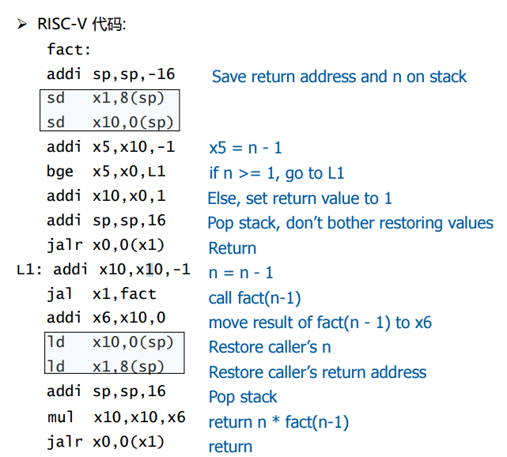

文字、程序、图片来源包括但不限于蒋老师的课件、我OS/计组老师的课件、助教的实验文档、我的个人理解
导言
- 操作系统是一个典型的 “system”——它完成对计算机硬件系统的抽象，提供应用程序的运行环境
- 从应用程序的视角看，操作系统定义了一系列的对象 (进程/线程、地址空间、文件、设备……) 和操纵它们的 API (系统调用)。这组强大的 API 把计算机的硬件资源有序地管理起来，它不仅能实现应用程序 (浏览器、游戏……)，还支持着各类神奇的系统程序 (容器、虚拟机、调试器、游戏外挂……)
- 从硬件的视角看，操作系统是一个拥有访问全部硬件功能的程序 (操作系统就是个 C 程序，不用怕)。硬件会帮助操作系统完成最初的初始化和加载，之后，操作系统加载完第一个程序后，从此作为 “中断处理程序” 在后台管理整个计算机系统
- 操作系统为什么难学？最主要原因是操作系统里的主题很多，有些主题对大家来说并不太熟悉。例如，同学们到目前为止编写的大部分代码都是串行的，打个比方，就是写一个程序模仿 “一个人”，一次执行一步动作。但操作系统引入了并发编程，也就是你需要协同多个共享内存的 “多个人” 时，会遇到很多你也许意料之外的问题。
- AMD是芯片公司造芯片的；x86是Intel提出的指令集，用在AMD造出的芯片上；windows/linux是操作系统
什么是程序？如何理解程序？
logisim_1.c
讲这个程序的目的，首先是为了让你学习宏的一些用法，其次是为了让你感受X-macro的设计美学(用于处理状态机)。
该程序的功能：两位bit，4状态循环模拟器。
X-macro 是一种在 C 和 C++ 编程中使用的技术，通过预处理器宏来简化代码的维护和扩展。它的核心思想是将重复代码的部分抽象为一个宏列表，从而避免硬编码多次相似的代码。X-macro 技术主要用于需要在多个地方使用相同一组常量、结构或函数定义的情况，通常在枚举、状态机、错误代码处理等场景下非常有用。
你需要了解一下宏。
简单理解宏就是简单替换。
宏还可以带参数，例如
#define FUN(a, b) (a > b ? a : b)。如果想输出参数的名字，例如
#define PRINT_VAR(var) printf(#var " = %d\n", var)1
2
3
4
5
6
7
8
9
10
using namespace std;
int main() {
int x = 10;
PRINT_VAR(x);
// 宏会被展开为：printf("x = %d\n", x);
}##起到拼接的作用，例如
#define DEFINE(X) static int X, X##1。宏展开后相当于int X, X1下面让我们来阅读一下logisim.c
1
2
3
4
5
6
7
8
9
10
11
12
13
14
15
16
17
18
19
20
21
22
int main() {
REGS_FOREACH(DEFINE); // 定义 X 和 Y
while (1) { // 无限循环，模拟时钟周期
RUN_LOGIC; // 执行逻辑运算，计算 X1 和 Y1 的值
REGS_FOREACH(PRINT); // 打印当前的 X 和 Y 的值
REGS_FOREACH(UPDATE); // 更新 X 和 Y 为 X1 和 Y1
putchar('\n'); // 换行
sleep(1); // 程序暂停 1 秒，模拟时钟的周期
}
}<unistd.h>是 POSIX（可移植操作系统接口）标准中的头文件，提供了对各种操作系统服务的访问，如文件操作、进程控制、用户身份管理等。在上述程序中，sleep用到它了。static在 C 语言中用于声明具有静态存储类别的变量或函数，这些变量或函数的生命周期贯穿整个程序运行期间，但它们的作用域仅限于定义它们的文件内部，从而提供了数据的持久性和封装性，防止了全局命名空间的污染。第一行
#define REGS_FOREACH(_) _(X) _(Y)，这个宏的意思是对X和Y做名为_的函数操作。从main函数可以推理出，_是个函数名。第二行的
RUN_LOGIC意思就是根据X和Y算出X1、Y1的值。'\'表示续行... ...
所以上面宏的逻辑就是，先写好各种功能宏（DEFINE、UPDATE、PRINT），功能宏传入的参数是一个变量，因为它是作用于一个变量的。
然后为了一次作用于多个变量，要再写个循环宏（REGS_FOREACH），循环宏传入的参数是一个功能宏，因为它展开就是把功能宏作用到各个变量上。所以各个变量的名字就要在循环宏里写好。
练习：理解后，试着写出上述程序
logisim_2.c
讲这个程序的目的，是为了让你感受到管道符的魅力，以及前后端结合的魅力。
该程序功能：通过两个变量X、Y，4种状态对应数字0、1、2、3。控制对应的七个变量的输出（与下文的seven-seg.py配合使用）
1
2
3
4
5
6
7
8
9
10
11
12
13
14
15
16
17
18
19
20
21
22
23
24
25
26
27
28
29
30
31
32
int main() {
REGS_FOREACH(DEFINE);
OUTS_FOREACH(DEFINE);
while (1) {
RUN_LOGIC; // 得到x1, y1, (ABCDEFG)由x,y得到
REGS_FOREACH(UPDATE); // 更新x, y
sleep(1);
OUTS_FOREACH(PRINT);
putchar('\n');
}
return 0;
}练习：试着自己写出这个程序（RUN_LOGIC部分可借鉴）
seven-seg.py
该程序功能：接受一行字符串代表7个灯的亮灭情况，输出对应的数字
1
2
3
4
5
6
7
8
9
10
11
12
13
14
15
16
17
18
19
20
21
22
23
24
25
26
27
28
29
30
31
32
33
34
35
36
37
38
39
40
41import sys
# \033[2J: 清楚整个屏幕
# \-33[1;1f: 将光标移到左上角
TEMPLATE = '''
\033[2J\033[1;1f
AAAAAAAAA
BB CC
BB CC
BB CC
BB CC
DDDDDDDDD
EE FF
EE FF
EE FF
EE FF
GGGGGGGGGG
'''
BLOCK = {
0: '\033[37m░\033[0m', # \033[37m表示设置字体颜色为白色，░是一个字符，\033[0m表示重置颜色
1: '\033[31m█\033[0m', # \033[31m表示设置字体颜色为红色，█是一个字符
}
VARS = 'ABCDEFG'
for v in VARS:
# Example: globals()['my_var'] = 42 # 动态创建一个名为 my_var 的全局变量并赋值为 42
globals()[v] = 0
# 从 stdin 逐行读取
while True:
line = sys.stdin.readline().strip() # 使用 readline 逐行读取来自管道的数据
if line:
exec(line)
pic = TEMPLATE
for v in VARS:
pic = pic.replace(v, BLOCK[globals()[v]]) # 'A' -> BLOCK[A], ...
print(pic)
print(f"Received line: {line}")
else:
break练习：看懂这个py程序
hanoi-r.c
1 |
|
练习：自己写出这个汉诺塔程序
讲这个程序的目的，是为了让你会用vscode gdb调试，以及引出如何用cpu执行角度去理解c语言程序
首先你先自己写出这个程序
然后去配置一下vscode里的gdb，配置完了试下各种功能以及反汇编视图是否可用
几个快捷键要熟悉：F5启动调试，shift+F5关闭调试，F11单步调试(会进入函数内部)，F10逐过程(把函数当作一条语句处理)
然后思考一下带递归的程序是如何从汇编角度和cpu执行角度去理解：
假设你写了一个带递归的程序hanio-r.c，然后你可以得到它的汇编。
回忆一下当时用vivado做计组项目的时候，是不是将一段汇编硬编码到rom里了？（哈佛结构）所以说，汇编程序本质上也是一段线性的，就是靠着PC在上下跳来跳去来实现的。
先思考下循环在汇编里的逻辑，本质就是PC加或者减某个数在每行的汇编里跳来跳去。
再思考下递归在汇编里的逻辑，递归里会开局部变量，这又是如何实现的呢？我以下面的代码来举例：
1
2
3
4
5
6int fact(int n) {
if (n < 1) return 1;
else return n * fact(n - 1);
}
// 参数n在寄存器x10中
// 为了尽可能少用通用寄存器，尽量复用，所以结果也分配在x10下面是对应的汇编：

哈佛结构除了ROM里存汇编，RAM里是存数据的。数据存储本质上也是一个“数组”。你可以想象数组长度很长，其实的某一段拿来当栈空间，栈空间的起点就是sp，它是栈空间数组的下标。
cpu执行角度是没有什么全局变量/局部变量这种说法的，数据要么就是通用寄存器，那么就存在RAM里。sp在通用regs里。
除了sp外，通用寄存器里，我们还需要一个x1。x1是RAM里数组的一个下标，其对应的数据是“最后一次”发生跳转的那条汇编的PC值+4。
举个例子，比如我在主函数里调用了fact()函数，那么调用这条语句的PC加4之后的PC'，就被存到了data[x1]里。然后如果我想return回主函数，只需jalr x0, 0(x1)即可，那么PC就跳到了PC'。
所以，为了实现函数调用，x1和sp必不可少 。
那么局部变量和嵌套调用如何实现呢？
仔细看上面的汇编，进入函数的第一件事，是将当前的x1和x10(结果)存到RAM里的栈空间内，这样后续嵌套递归的话，x1和x10的值一定会被更改，但没事，因为我们已经将当前这一层调用的x1, x10存到RAM里了，当后续的调用return回当前层时，从RAM里重新取出即可。
听了我以上的讲解，相信我已经能完全看懂上面的汇编了，也就完全理解C语言里的递归在cpu执行角度是如何理解的了。
总结一下，cpu执行角度没有全局变量/局部变量之说，数据存储要不就在通用寄存器，要不就在RAM里。通用寄存器里俩很重要的分别是sp和x1，sp掌管着RAM里栈空间的下标，x1掌管着RAM里"调用PC+4"这个元素的下标。
递归本质就是一进入当前层时，把当前层信息(x1 + 数据信息)压入栈中(sp减一个数)，当前层return的时候就弹栈(sp加回来)。如果在当前层嵌套调用了自己(语句1)，那么在当前层语句1之后的语句，若用到了当前层的数据，就从栈里取出来。不这么做的话，数据信息其实是已经被污染，因为CPU没有作用域这种说法。
Well，了解了cpu执行角度的c语言程序，我们就可以做一个高抽象性的概括了，即：C语言本质就是状态机，状态为（通用寄存器, RAM），C语言里的每一条语句，即每一条汇编的执行，都是一个状态到另一个状态的改变。这个状态机不是自发运行的，而是按照ROM里的指令去实现状态之间的改变。
syscall
- 一条神奇的指令，即调用操作系统
- 从上面的讲解，我们知道，任意程序本质上就是对状态机（通用寄存器, RAM）状态改变的指挥棒。那么当一个程序调用syscall的时候，就会执行操作系统里的程序，也就是指挥棒交到了操作系统手上。
- 在程序眼里，操作系统就是syscall这条指令，syscall指令的各种api包罗万象。你想用屏幕？可以，syscall请求一下。你想与别的进程交互？可以，syscall请求一下。So，没什么神奇的，所有的程序与操作系统交互都是通过syscall。
- 由此，就实现了操作系统与任意程序的交互。
lab0-裸机程序
预备知识
makefile快速入门：
gcc test.c：编译test.c并生成可执行文件a.outgcc test.c -o yyy：编译test.c并将可执行文件重命名为yyygcc test.c -c：编译test.c但不链接，生成目标文件test.ogcc test.c -c -o yyy：编译test.c但不链接，将目标文件改名为yyy最普通的makefile写法
1 | hello: hello.o print.o |
- .PHONY 后面跟着的东西，就可以使你make xxx的时候执行的是makefile里xxx的逻辑。
局部变量：函数结束就销毁
静态局部变量：静态局部变量永远在，直到程序结束。但仍只能被本函数访问
全局变量：任何文件，只要通过extern关键字，就可以访问它
静态全局变量：只有本文件能够访问它
静态变量 = 静态局部变量 + 静态全局变量
objdump -h test.o：查看目标文件test.o的段头- 什么是段头？就是程序编译过后的ELF文件的头（元数据）
.text段：存放程序编译后生成的机器码.data段：存放已初始化过的死不了的东西，即初始化过的全局变量和静态变量- 在ELF文件中，已经记录了这些变量的初始值，运行时便会加载到内存中
.bss段：存放未初始化过的死不了的东西，即未初始化过的全局变量和静态变量- 在ELF文件中，没有这些变量的初始值，但是会告诉OS在运行时将他们初始化为0/NULL
.rodata段：存在只读的常量，若试图修改，会导致运行错误
实现裸机Hello world!
- 我们以往写用户程序时，通常都只关注代码本身，而将运行时的环境交给了编译器等系统软件进行处理，但我们若要编写裸机程序，就需要进一步揭开运行时环境的神秘面纱。
- 下表揭示了裸机程序与用户程序的区别：
| 对比对象 | 裸机程序 | 常规用户程序 |
|---|---|---|
| 内存地址空间 | 自行管理物理地址空间，可以自行对虚拟内存进行配置后使自己运行在虚拟地址空间 | 由操作系统管理的虚拟地址空间（不考虑Linux NOMMU模式） |
| 系统调用 | 调用自己 | 调用更高特权级的操作系统/固件 |
| 栈的初始化 | 自行完成 | 操作系统载入用户进程时完成（毕竟还要通过栈传递参数） |
| BSS段的清空 | 自行完成 | 操作系统分配虚拟页面时完成清零 |
- ok，那开始吧！首先先写一个用于初始化的汇编代码。（用于初始化虚实地址映射方式、栈初始化、执行main）
- 注释写的非常详细了，请仔细阅读：
1 | # 告诉汇编器main这个东西是外部C语言的main函数 |